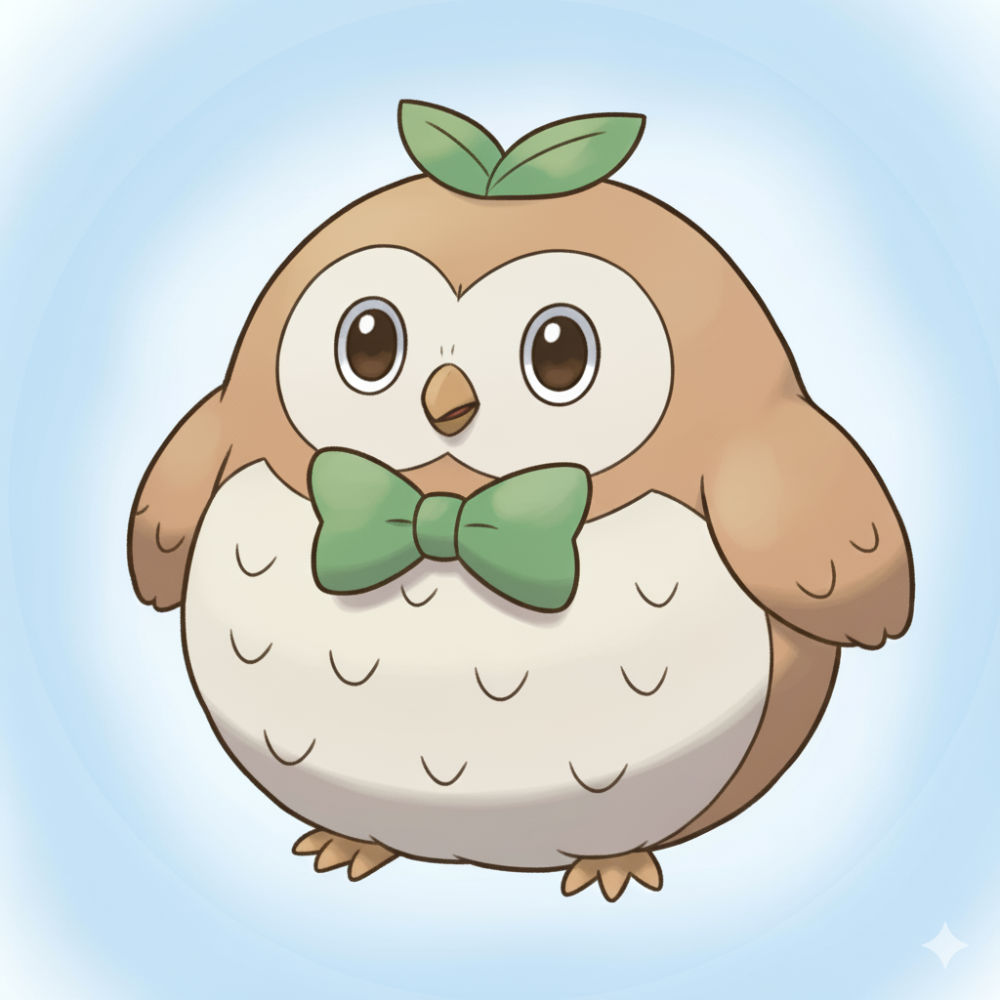

|

|
POKEMON
Rowlet (Pokemon hệ cỏ bay vùng Aloha)
TÍNH CÁCH
Rowlet là một Pokémon nhỏ nhắn, tròn trịa và rất đáng yêu với đôi mắt long lanh. Tính cách hiền hòa, điềm tĩnh nhưng tò mò, đôi lúc hơi ngơ ngác khiến chú càng thêm dễ thương.
SỞ THÍCH
Ngủ trưa: Thích nhất là được cuộn tròn và ngủ một giấc thật ngon dưới ánh nắng nhẹ.
Ăn quả mọng: Món ăn yêu thích của Rowlet là các loại quả mọng tươi ngon và ngọt ngào.
Treo ngược: Đôi khi, Rowlet thích treo ngược mình trên cành cây để quan sát thế giới từ một góc nhìn khác lạ.
|